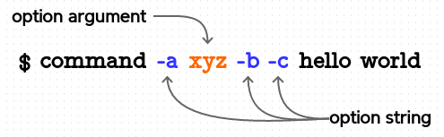

getopts
getopts optstring varname [args...]

쉘 에서 명령을 실행할 때 옵션을 사용하는데요.
스크립트 파일이나 함수를 실행할 때도 동일하게 옵션을 사용할 수 있습니다.
사용된 옵션은 다른 인수들과 마찬가지로 $1, $2, ... positional parameters 형태로 전달되므로
스크립트 내에서 직접 옵션을 해석해서 사용해야 됩니다.
이때 옵션 해석 작업을 쉽게 도와주는 명령이 getopts 입니다.
옵션에는 short 옵션과 long 옵션이 있는데 getopts 명령은 short 옵션을 처리합니다.
short 옵션의 특징
short 옵션은 다음과 같이 여러 가지 방법으로 사용될 수 있습니다. 그러므로 getopts 명령을 이용하지 않고 직접 옵션을 해석해 처리한다면 옵션 처리에만 스크립트가 복잡해질 수 있습니다.
$ command -a -b -c
# 옵션을 붙여서 사용할 수 있으며 순서가 바뀌어도 된다.
$ command -abc
$ command -b -ca
# 옵션인수를 가질 수 있다.
$ command -a xxx -b -c yyy
# 옵션인수를 옵션에 붙여 쓸 수가 있다.
# 그러므로 다음은 위의 예와 동일하게 해석됩니다.
$ command -axxx -bcyyy
# 옵션 구분자 '--' 가 올경우 우측에 있는 값은 옵션으로 해석하면 안된다.
$ command -a -b -- -c
long 옵션의 경우
--posix, --warning level 와 같은 형태로 사용되는 long 옵션은
short 옵션과는 달리 붙여 쓸 수가 없기 때문에
사용방법이 간단하여 직접 해석해서 처리하는 것이 어렵지 않습니다.
그러므로 먼저 short 옵션 처리 방법에 대해 알아보고 뒷부분에서 long 옵션에 대해 알아보겠습니다.
Option string 과 $OPTIND
명령에서 -a, -b, -c 세 개의 옵션을 사용한다면 getopts 명령에 설정하는
optstring 값은 abc 가 됩니다. args 에는 명령 실행시 사용된 인수 값들이 오는데
생략할 경우 "$@" 가 사용됩니다.
다음 예제를 통해서 getopts 명령에서 사용되는 optstring, varname 과 $OPTIND 에 대해 알아보겠습니다. shell 이 처음 실행되면 $OPTIND 값은 1 을 가리키고 getopts 명령이 실행될 때마다 다음 옵션의 index 값을 가리키게 됩니다.
# 다음 set 명령은 실제 "command -a -bc hello world" 명령을 실행했을 때와 같이
# positional parameters 를 설정합니다.
$ set -- -a -bc hello world
$ echo "$@"
-a -bc hello world
# 처음 $OPTIND 값은 1 로 -a 를 가리킵니다.
$ echo $OPTIND
1
$ getopts abc opt "$@" # getopts 명령을 실행할 때마다 opt 변수값과
$ echo $opt, $OPTIND # OPTIND 값이 변경되는 것을 볼 수 있습니다.
a, 2 # 다음 옵션 "b" 의 index 값은 2 가 됩니다.
$ getopts abc opt "$@" # 다음 옵션 "c" 는 "b" 와 붙여 쓰기를 하여 같은
$ echo $opt, $OPTIND # OPTIND 값을 가집니다.
b, 2 # ( sh 의 경우에는 b, 3 가 출력됩니다. )
$ getopts abc opt # args 부분을 생략하면 default 값은 "$@" 입니다.
$ echo $opt, $OPTIND
c, 3
# 옵션 스트링을 처리하고 난후 다음과 같이 shift 를 하면 나머지 명령 인수만 남게 됩니다.
$ echo "$@"
-a -bc hello world
$ shift $(( OPTIND - 1 ))
$ echo "$@"
hello world
옵션을 붙여쓰기 할 경우 sh 과 bash 가 $OPTIND 값을 처리하는 방식이 약간 다릅니다.
하지만 최종적으로 shift $(( OPTIND - 1 )) 한 값은 둘 다 같게 됩니다.
#!/bin/bash 의 경우 #!/bin/sh 의 경우
set -- -abc hello world set -- -abc hello world
echo $OPTIND echo $OPTIND
getopts abc opt getopts abc opt
echo $opt, $OPTIND echo $opt, $OPTIND
getopts abc opt getopts abc opt
echo $opt, $OPTIND echo $opt, $OPTIND
getopts abc opt getopts abc opt
echo $opt, $OPTIND echo $opt, $OPTIND
shift $(( OPTIND - 1 )) shift $(( OPTIND - 1 ))
echo "$@" echo "$@"
--------------------------- ---------------------------
1 (index 1 은 -abc 를 가리킴 1 (index 1 은 -abc 를 가리킴
a, 1 (index 1 은 -abc 를 가리킴 a, 2 (index 2 는 hello 를 가리킴
b, 1 (index 1 은 -abc 를 가리킴 b, 2 (index 2 는 hello 를 가리킴
c, 2 (index 2 는 hello 를 가리킴 c, 2 (index 2 는 hello 를 가리킴
hello world hello world
Option argument
옵션은 옵션인수를 가질 수 있는데요. 이때는 옵션 스트링에서 해당 옵션 문자 뒤에 : 을 붙입니다.
그러면 getopts 명령은 옵션인수 값를 $OPTARG 변수에 설정해 줍니다.
$ OPTIND=1
$ set -- -a xyz -b -c hello world
# 옵션 a 가 옵션인수를 가지므로 옵션 스트링으로 a: 를 설정하였습니다.
$ getopts a:bc opt
$ echo $opt, $OPTARG, $OPTIND
a, xyz, 3 # 옵션인수가 포함되므로 OPTIND 값이 3 이 되었음.
$ getopts a:bc opt
$ echo $opt, $OPTARG, $OPTIND
b, , 4
$ getopts a:bc opt
$ echo $opt, $OPTARG, $OPTIND
c, , 5
loop 문을 이용해 처리
명령문에서 사용된 모든 옵션을 처리하기 위해서 다음과 같이 while 과 case 문을 이용합니다.
#!/bin/bash
while getopts "a:bc" opt; do
case $opt in
a)
echo >&2 "-a was triggered!, OPTARG: $OPTARG"
;;
b)
echo >&2 "-b was triggered!"
;;
c)
echo >&2 "-c was triggered!"
;;
esac
done
shift $(( OPTIND - 1 ))
echo "$@"
# 나머지 인수들을 출력하는데 shift 대신 다음과 같이 해도 됩니다.
# for (( ; OPTIND <= $#; OPTIND++ )); do
# echo "${!OPTIND}"
# done
..................................
$ ./test.sh -a xyz -bc hello world
-a was triggered!, OPTARG: xyz
-b was triggered!
-c was triggered!
hello world
Error reporting
위 예제에서 옵션 스트링에 없는 문자, 예를 들면 -d 를 사용하게 되면 오류 메시지가 출력되는 것을 볼 수 있는데요.
getopts 명령은 error reporting 과 관련해서 다음과 같은 두 개의 모드를 제공합니다.
| Verbose mode | |
|---|---|
| invalid 옵션 사용 | opt 값을 ? 문자로 설정하고 OPTARG 값은 unset. 오류 메시지를 출력. |
| 옵션인수 값을 제공하지 않음 | opt 값을 ? 문자로 설정하고 OPTARG 값은 unset. 오류 메시지를 출력. |
| Silent mode | |
|---|---|
| invalid 옵션 사용 | opt 값을 ? 문자로 설정하고 OPTARG 값은 해당 옵션 문자로 설정 |
| 옵션인수 값을 제공하지 않음 | opt 값을 : 문자로 설정하고 OPTARG 값은 해당 옵션 문자로 설정 |
default 는 verbose mode 인데 기본적으로 옵션과 관련된 오류메시지가 표시되므로
스크립트를 배포할 때는 잘 사용하지 않고 대신 silent mode 를 이용합니다.
silent mode 를 설정하기 위해서는 옵션 스트링의 맨 앞부분에 : 문자를 추가해 주면 됩니다.
#!/bin/bash
# silent mode 를 설정하기 위해 옵션 스트링의 맨 앞부분에 ':' 문자를 추가
while getopts ":a:" opt; do
case $opt in
a)
echo >&2 "MSG: -a was triggered, argument: $OPTARG"
;;
\?) # \? 는 escape 했으므로 glob 문자가 아님.
echo >&2 "ERR: Invalid option: -$OPTARG"
exit 1
;;
:)
echo >&2 "ERR: Option -$OPTARG requires an argument."
exit 1
;;
esac
done
------------------------------------------------------
$ ./test.sh -a
ERR: Option -a requires an argument.
$ ./test.sh -a xyz
MSG: -a was triggered, argument: xyz
$ ./test.sh -d
ERR: Invalid option: -d
주의할 점
OPTIND, OPTARG 변수는 local 변수가 아니므로 필요할 경우 함수 내에서 local 로 설정해 사용해야 합니다. getopts 명령은 옵션인수 사용과 관련해서 다음과 같이 주의할 점이 있습니다.
# 옵션 스트링이 'a:bc' 이면 -a 는 옵션인수를 갖는데요. 옵션인수는 어떤 문자도 올 수 있기 때문에
# 다음과 같이 -a 에 옵션인수가 설정되지 않으면 -b 가 -a 의 옵션 인수가 됩니다.
$ command -a -b -c
# 다음의 경우 옵션 스트링이 'abc' 라면 -b -c 옵션은 인식되지 않습니다.
# 파일명이나 기타 스트링은 마지막에 와야하는데 그렇지 않을 경우 이후 옵션은 인식되지 않습니다.
$ command -a foo.c -b -c
예제 )
#!/bin/bash
usage() {
err_msg "Usage: $(basename "$0") -s <45|90> -p <string>"
exit 1
}
err_msg() { echo "$@" ;} >&2
err_msg_s() { err_msg "-s option argument 45 or 90 required" ;}
err_msg_p() { err_msg "-p option argument required" ;}
while getopts ":s:p:" opt; do
case $opt in
s)
s=$OPTARG
[ "$s" = 45 ] || [ "$s" = 90 ] || { err_msg_s; usage ;}
;;
p)
p=$OPTARG # -p -s 45 또는 -p -s45 일경우
[[ $p =~ ^-s ]] && { err_msg_p; usage ;}
;;
:)
case $OPTARG in
s) err_msg_s ;;
p) err_msg_p ;;
esac
usage
;;
\?)
err_msg "Invalid option: -$OPTARG"
usage
;;
esac
done
if [ -z "$s" ] || [ -z "$p" ]; then
usage
fi
echo "s = $s"
echo "p = $p"
Long 옵션의 처리
$ ./test.sh -a aaa --posix --long 123 -b --warning=2 -- hello world
short 옵션 처리에 대해 알아보았는데요.
만약에 위와 같은 명령문을 getopts 으로 처리한다면 옵션 스트링으로 :a:b- 를 사용하고
case 문에서는 -) 를 사용해야 -- 로 시작하는 long 옵션을 받을 수 있습니다.
그런데 여기서 문제는 short 옵션은 하나의 문자를 옵션으로 보기 때문에 이후에 p, o, s, i, x
가 모두 붙여쓰기한 옵션명으로 인식을 하게 됩니다.
또 한 가지 문제점은 위의 --long 옵션과 같이 123 옵션인수를 사용하게 되면 그 이후의 옵션
그러니까 -b 는 getopts 에 의해 인식이 되지 않습니다.
따라서 getopts 명령으로 short, long 옵션을 동시에 처리하는 것은 어려우므로 먼저 long 옵션을 처리하고 난후 나머지 short 옵션만 정리하여 getopts 에 넘겨주면 이전과 동일하게 short 옵션을 처리할 수 있습니다.
# 처리한 long 옵션은 삭제하고 short 옵션만 getopts 명령에 전달.
-a aaa -b -- hello world
long 옵션을 $@ 에서 삭제하는 방법은 while 문을 이용해 인수들을 하나씩
처리하면서 long 옵션이 아닐 경우 특정 변수에 계속해서 append 하는 것입니다.
마지막으로 long 옵션이 제거된 변수를 이용해 set 명령으로 다시 $@ 값을 설정합니다.
# shift 명령을 이용해 항상 '$1' 에는 다음 인수가 설정되게 합니다.
while true; do
case $1 in
--optionA)
...
shift; continue # long 옵션일 경우 continue 명령을 사용함으로써
;; # 변수 'A' 에 값이 저장되지 않게 합니다.
--optionB)
...
...
esac
# long 옵션이 아닐 경우 변수 'A' 에 append 하는 과정입니다.
# 이때 인수들의 구분자로 non-printing 문자인 '\a' 를 사용합니다.
# (공백을 사용하게 되면 인수값에 공백이 포함될 경우 인수값도 분리가 됩니다)
A=$A$([ -n "$A" ] && echo -e "\a")$1
shift
done
# 마지막으로 set -f 로 globbing 방지 처리를 하고 IFS 값을 '\a' 로 설정하여
# set -- $A 명령으로 '$@' 값을 다시 설정합니다.
IFS=$(echo -e "\a"); set -f; set -- $A; set +f; IFS=$(echo -e " \n\t")
다음은 전체 코드 내용입니다.
sh에서 사용하려면 본문의echo -e를echo로 변경해 주면 됩니다.
#!/bin/bash
usage() {
err_msg "Usage: $0 -a <string> -b --long <string> --posix --warning[=level]"
exit 1
}
err_msg() { echo "$@" ;} >&2
err_msg_a() { err_msg "-a option argument required" ;}
err_msg_l() { err_msg "--long option argument required" ;}
########################## long 옵션 처리 부분 #############################
A=""
while true; do
[ $# -eq 0 ] && break
case $1 in
--long)
shift # 옵션인수를 위한 shift
# --long 은 옵션인수를 갖는데 옵션인수가 오지 않고 다른 옵션명(-*) 이 오거나
# 명령의 끝에 위치하여 옵션인수가 설정되지 않았을 경우 ("")
case $1 in (-*|"") err_msg_l; usage; esac
err_msg "--long was triggered!, OPTARG: $1"
shift; continue
;;
--warning*)
# '=' 로 분리된 level 값을 처리하는 과정입니다.
case $1 in (*=*) level=${1#*=}; esac
err_msg "--warning was triggered!, level: $level"
shift; continue
;;
--posix)
err_msg "--posix was triggered!"
shift; continue
;;
--)
# '--' 는 옵션의 끝을 나타내므로 나머지 값 '$*' 을 A 에 append 하고 break 합니다.
# 이때 IFS 값을 '\a' 로 변경해야 $* 내의 인수 구분자가 '\a' 로 됩니다.
IFS=$(echo -e "\a")
A=$A$([ -n "$A" ] && echo -e "\a")$*
break
;;
--*)
err_msg "Invalid option: $1"
usage;
;;
esac
A=$A$([ -n "$A" ] && echo -e "\a")$1
shift
done
# 이후부터는 '$@' 값에 short 옵션만 남게 됩니다.
# -a aaa -b -- hello world
IFS=$(echo -e "\a"); set -f; set -- $A; set +f; IFS=$(echo -e " \n\t")
########################## short 옵션 처리 부분 #############################
# 이전과 동일하게 short 옵션을 처리하면 됩니다.
while getopts ":a:b" opt; do
case $opt in
a)
case $OPTARG in (-*) err_msg_a; usage; esac
err_msg "-a was triggered!, OPTARG: $OPTARG"
;;
b)
err_msg "-b was triggered!"
;;
:)
case $OPTARG in
a) err_msg_a ;;
esac
usage
;;
\?)
err_msg "Invalid option: -$OPTARG"
usage
;;
esac
done
shift $(( OPTIND - 1 ))
echo ------------------------------------
echo "$@"
########################## 실행 결과 #############################
$ ./test.sh -a 'aaa bbb' --posix --long 123 -b --warning=2 -- hello world
--posix was triggered!
--long was triggered!, OPTARG: 123
--warning was triggered!, level: 2
-a was triggered!, OPTARG: aaa bbb
-b was triggered!
------------------------------------
hello world
getopt 외부 명령
getopt 은 이름이 getopts builtin 명령과 비슷한데 /usr/bin/getopt 에 위치한 외부 명령입니다.
이 명령은 기본적으로 short, long 옵션을 모두 지원합니다.
옵션 인수를 가질 경우 : 문자를 사용하는 것은 getopts builtin 명령과 동일합니다.
# short 옵션 지정은 -o 옵션으로 합니다.
# ':' 에 따라서 옵션 -a 는 옵션 인수를 갖습니다.
getopt -o a:bc
# long 옵션 지정은 -l 옵션으로 하고 옵션명은 ',' 로 구분합니다.
# ':' 에 따라서 옵션 --path 와 --name 은 옵션 인수를 갖습니다.
# 명령 라인에서 옵션 인수 사용은 "--name foo" 또는 "--name=foo" 두 가지 모두 가능합니다.
getopt -l help,path:,name:
# 명령 마지막에는 -- 와 함께 "$@" 를 붙입니다.
getopt -o a:bc -l help,path:,name: -- "$@"
설정하지 않은 옵션이 사용되거나 옵션 인수가 빠질 경우 오류메시지를 출력해줍니다.
#!/bin/bash
options=$( getopt -o a:bc -l help,path:,name: -- "$@" )
echo "$options"
-----------------------------------------------------
$ ./test.sh -x
getopt: invalid option -- 'x'
$ ./test.sh --xxx
getopt: unrecognized option '--xxx'
$ ./test.sh -a
getopt: option requires an argument -- 'a'
$ ./test.sh --name
getopt: option '--name' requires an argument
getopt 명령의 특징은 사용자가 입력한 옵션들을 case 문에서 사용하기 좋게 정렬해준다는 것입니다.
#!/bin/bash
options=$( getopt -o a:bc -l help,path:,name: -- "$@" )
echo "$options"
-----------------------------------------------------
# 1. -a123 옵션이 -a '123' 로 분리.
# 2. -bc 옵션이 -b -c 로 분리.
# 3. 옵션에 해당하지 않는 hello.c 는 '--' 뒤로 이동
$ ./test.sh -a123 -bc hello.c
-a '123' -b -c -- 'hello.c'
# --path=/usr/bin 옵션이 --path '/usr/bin' 로 분리
# '--' 는 항상 끝부분에 붙는다.
$ ./test.sh --name foo --path=/usr/bin
--name 'foo' --path '/usr/bin' --
# '--' ( end of options ) 처리도 해줍니다.
$ ./test.sh -a123 -bc hello.c -- -x --yyy
-a '123' -b -c -- 'hello.c' '-x' '--yyy'
getopts builtin 명령의 경우 옵션들 중간에 파일명이 온다거나 하면 이후의 옵션은 옵션으로 인식이 되지 않는데 getopt 명령의 경우는 올바르게 구분하여 정렬해 줍니다.
[ getopts builtin 명령의 경우 ]
#!/bin/bash
while getopts "a:bc" opt; do
case $opt in
a)
echo >&2 "-a was triggered!, OPTARG: $OPTARG"
;;
b)
echo >&2 "-b was triggered!"
;;
c)
echo >&2 "-c was triggered!"
;;
esac
done
shift $(( OPTIND - 1 ))
echo ------------------
echo "$@"
...............................................................
./test.sh -a 123 -bc hello.c
-a was triggered!, OPTARG: 123
-b was triggered!
-c was triggered!
------------------
hello.c
# 옵션들 중간에 파일명이 위치하여 이후 -bc 는 옵션으로 인식되지 않는다.
$ ./test.sh -a 123 hello.c -bc
-a was triggered!, OPTARG: 123
------------------
hello.c -bc
getopt 외부 명령의 경우는 옵션에 해당하지 않는 hello.c 를 -- 뒤로 정렬해 줍니다.
#!/bin/bash
options=$(getopt -o a:bc -- "$@")
echo $options
.................................
$ ./test.sh -a 123 hello.c -bc
-a '123' -b -c -- 'hello.c'
예제 )
#!/bin/bash
if ! options=$(getopt -o hp:n: -l help,path:,name:,aaa -- "$@")
then
echo "ERROR: print usage"
exit 1
fi
eval set -- $options
while true; do
case "$1" in
-h|--help)
echo >&2 "$1 was triggered!"
shift ;;
-p|--path)
echo >&2 "$1 was triggered!, OPTARG: $2"
shift 2 ;; # 옵션 인수를 가지므로 shift 2 를 합니다.
-n|--name)
echo >&2 "$1 was triggered!, OPTARG: $2"
shift 2 ;;
--aaa)
echo >&2 "$1 was triggered!"
shift ;;
--)
shift
break
esac
done
echo --------------------
echo "$@"
-----------------------------------------------------------------
$ ./test.sh -h hello.c -p /usr/bin --name='foo bar' --aaa -- --bbb
-h was triggered!
-p was triggered!, OPTARG: /usr/bin
--name was triggered!, OPTARG: foo bar
--aaa was triggered!
--------------------
hello.c --bbb
Quiz
명령에 인수를 전달할 때 command line 뿐만 아니라 파이프나 redirection 을 이용해서 전달하려면 어떻게 할까요?
파이프나 redirection 을 이용하면 명령의 stdin 에 연결이 되므로 read 명령을 이용해 값을 읽어들이면 됩니다. 그런데 이때 값을 읽어들이기 위해 단순히 read 명령을 사용하면 전달되는 값이 없을 경우 블록이 되므로 read 하기 전에 먼저 stdin 이 터미널인지 아닌지 체크해서 터미널이 아닐 경우만 라인을 읽어야 합니다.
#!/bin/bash
if [ $# != 0 ]; then
echo "from command line"
for (( i = 1; i <= $#; i++ )) do echo "\$$i : ${!i}"; done
fi
set --
if ! test -t 0; then # stdin 이 터미널이 아닐 경우만 read 합니다.
while read -r line; do args+=`printf "%q " "$line"`; done
eval set -- $args
# 만약에 command line 옵션과 합치려면 다음과 같이 하면 됩니다.
# eval set -- $args '"$@"'
fi
if [ $# != 0 ]; then
echo "from STDIN"
for (( i = 1; i <= $#; i++ )) do echo "\$$i : ${!i}"; done
fi
----------------------------------------------------------------
$ ./test.sh 11 "22 33" 44 $ echo -e '11\n22 33\n44' | ./test.sh
from command line from STDIN
$1 : 11 $1 : 11
$2 : 22 33 $2 : 22 33
$3 : 44 $3 : 44
$ ./test.sh <<< $'11\n22 33\n44'
from STDIN
$1 : 11
$2 : 22 33
$3 : 44
$ ./test.sh <<\EOF
> 11
> 22 33
> 44
> EOF
from STDIN
$1 : 11
$2 : 22 33
$3 : 44
$ ./test.sh 11 "22 33" 44 <<\EOF
foo
bar 22
zoo
EOF
from command line
$1 : 11
$2 : 22 33
$3 : 44
from STDIN
$1 : foo
$2 : bar 22
$3 : zoo
2 .
objdump 명령을 이용해 disassemble 을 해보려면 먼저 컴파일 과정을 거쳐서
object 파일이나 실행파일을 만들어야 되는데요.
스크립트를 이용해 C 소스 파일을 직접 objdump 합니다.
추가로 gcc-aarch64-linux-gnu, gcc-riscv64-linux-gnu . . .
패키지도 설치해서 여러 아키텍쳐 별로도 조회해볼 수 있게 합니다.
clang 의 경우는 gcc 처럼 각 cpu 아키텍쳐 별로 패키지를 설치하지 않아도
llvm-objdump --version에서 지원하는 타겟의 컴파일과 오브젝트 파일까지 생성이 가능하지만 링크를 해서 실행파일은 만들 수는 없습니다.
1 . 디폴트 아키텍쳐는 x86 이고 실행파일을 만들어 덤프 합니다.
$ objdump.sh hello.c
2 . 링크는 하지 않고 컴파일만 해서 오브젝트 파일을 덤프 합니다.
$ objdump.sh
-chello.c
3 . func1 함수 부분만 출력합니다.
$ objdump.sh
-f func1hello.c
4 . arm cpu 용으로 컴파일해서 덤프 합니다.
$ objdump.sh
-a aarch64-f func1 hello.c
5 . 기타 gcc 옵션을 주려면 -- 와 함께 마지막에 추가하면 됩니다.
$ objdump.sh -a aarch64 -f func1 hello.c --
-O2
#!/bin/bash -e
err() { echo "$@" ;} >&2
usage() {
cat <<EOF
Usage: $(basename "$0") [-a arch] [-f func] [-c] [-h] file.c
-------------------------------------------------------------------
arch: arm armhf aarch64 riscv64 mips mips64 ppc ppc64 s390x sparc64
-------------------------------------------------------------------
EOF
exit 1
} >&2
test $# = 0 && usage
options=$(getopt -o a:f:ch -- "$@") || usage
eval set -- $options
while true; do
case $1 in
-a)
arch=$2; shift 2 ;; # -a 는 옵션 인수를 가지므로 shift 2 를 합니다.
-f)
func=$2; shift 2 ;;
-c)
comp=$1; shift ;;
-h)
usage ;;
--)
shift; break
esac
done
if test $# -ge 1; then
file=$1
shift
else
usage
fi
test -z "$arch" && arch=x86_64
case $arch in
x86_64)
gcc=gcc
objdump=objdump
;;
aarch64)
gcc=aarch64-linux-gnu-gcc
objdump=aarch64-linux-gnu-objdump
;;
arm)
gcc=arm-linux-gnueabi-gcc
objdump=arm-linux-gnueabi-objdump
;;
armhf)
gcc=arm-linux-gnueabihf-gcc
objdump=arm-linux-gnueabihf-objdump
;;
riscv64)
gcc=riscv64-linux-gnu-gcc
objdump=riscv64-linux-gnu-objdump
;;
mips64)
gcc=mips64-linux-gnuabi64-gcc
objdump=mips64-linux-gnuabi64-objdump
;;
mips)
gcc=mips-linux-gnu-gcc
objdump=mips-linux-gnu-objdump
;;
ppc64)
gcc=powerpc64-linux-gnu-gcc
objdump=powerpc64-linux-gnu-objdump
;;
ppc)
gcc=powerpc-linux-gnu-gcc
objdump=powerpc-linux-gnu-objdump
;;
s390x)
gcc=s390x-linux-gnu-gcc
objdump=s390x-linux-gnu-objdump
;;
sparc64)
gcc=sparc64-linux-gnu-gcc
objdump=sparc64-linux-gnu-objdump
;;
*)
err
err "ERROR: unknown architecture"
usage
esac
trap 'rm -f $tmpfile' EXIT
tmpfile=`mktemp -p /dev/shm`
$gcc -g $comp -o $tmpfile "$file" "$@" &&
if test -n "$func"; then
func=${func//\*/\\*}; func=${func//[/\\[}
$objdump -wCS $tmpfile |
sed -n '/^[[:xdigit:]]\+ <\.\?'"$func"'>:$/,/^[[:xdigit:]]\+ <.\+>:$/p'
else
$objdump -wCS $tmpfile
fi
CISC 인 x86 의 경우 인스트럭션 사이즈가 가변인데 반해 RISC 는 일정한 것을 볼 수 있습니다.
$ objdump.sh hello.c | awk -F '\t' '$1 && $2 ~ /[^ ]/ {
a[length(gensub(/ /,"","g",$2)),i++] = $2 }
END { PROCINFO["sorted_in"] = "@ind_num_desc"; for (i in a) print a[i] }
'
66 66 2e 0f 1f 84 00 00 00 00 00 # x86 은 1 ~ 12 bytes 까지 가변
66 2e 0f 1f 84 00 00 00 00 00
48 83 3d e2 2e 00 00 00
4c 8d 3d 3b 2c 00 00
. . .
---------------------------------------------------------------
$ objdump.sh -a aarch64 hello.c | awk -F '\t' '$1 && $2 ~ /[^ ]/ {
a[length(gensub(/ /,"","g",$2)),i++] = $2 }
END { PROCINFO["sorted_in"] = "@ind_num_desc"; for (i in a) print a[i] }
'
d0000080 # RISC 는 일정
b4000080
f947ec00
b0000080
35000140
. . .
qemu 의 유저 모드 에뮬레이션을 이용하면 실행과 디버깅도 가능합니다. 유저 모드 에뮬레이션은 하드웨어 디바이스는 에뮬레이션 하지 않고 cpu instruction 과 system call 을 에뮬레이션 합니다.
$ sudo apt install qemu-user gdb-multiarch
$ arm-linux-gnueabi-gcc -g -o hello.arm hello.c
$ file hello.arm
hello.arm: ELF 32-bit LSB executable, ARM, EABI5 version 1 (SYSV), dynamically linked,
interpreter /lib/ld-linux.so.3, BuildID[sha1]=f6f1a7f2795138c3cefdaa4705c2d32de1bdbc98,
for GNU/Linux 3.2.0, with debug_info, not stripped
# 실행파일을 -static 으로 빌드하면 -L ... 옵션은 필요없습니다.
$ qemu-arm -L /usr/arm-linux-gnueabi hello.arm
hello world
# strace
$ qemu-arm -L /usr/arm-linux-gnueabi -strace hello.arm
24255 brk(NULL) = 0x00022000
24255 uname(0xfffed5f8) = 0
. . .
------------------------------------------------------
# terminal 1
$ qemu-arm -L /usr/arm-linux-gnueabi -g 1234 hello.arm
# terminal 2
$ gdb-multiarch -q hello.arm
Reading symbols from hello.arm...
(gdb) set sysroot /usr/arm-linux-gnueabi
(gdb) target remote :1234
Remote debugging using :1234
Reading symbols from /usr/arm-linux-gnueabi/lib/ld-linux.so.3...
(No debugging symbols found in /usr/arm-linux-gnueabi/lib/ld-linux.so.3)
0xff7bca40 in ?? () from /usr/arm-linux-gnueabi/lib/ld-linux.so.3
(gdb) b main
Breakpoint 1 at 0x104ac: file hello.c, line 15.
(gdb) c
Continuing.
Breakpoint 1, main () at hello.c:15
15 int res = gvar1 + gvar2;
(gdb) disas main
Dump of assembler code for function main:
0x000104a0 <+0>: push {r11, lr}
0x000104a4 <+4>: add r11, sp, #4
0x000104a8 <+8>: sub sp, sp, #8
=> 0x000104ac <+12>: ldr r3, [pc, #52] ; 0x104e8 <main+72>
0x000104b0 <+16>: ldr r2, [r3]
0x000104b4 <+20>: ldr r3, [pc, #48] ; 0x104ec <main+76>
0x000104b8 <+24>: ldr r3, [r3]
0x000104bc <+28>: add r3, r2, r3
. . .
한가지 tip 으로 binfmt-support, qemu-user-static 패키지를 설치하면 static 으로 빌드된
실행파일의 경우 qemu-arm 명령 없이도 프롬프트 상에서 직접 실행할 수 있습니다.
dynamic link 로 빌드된 실행파일도 가능한데 다음과 같이 설정해 주면 됩니다.
mkdir /etc/qemu-binfmt
ln -s /usr/aarch64-linux-gnu /etc/qemu-binfmt/aarch64
ln -s /usr/arm-linux-gnueabihf /etc/qemu-binfmt/arm
ln -s /usr/riscv64-linux-gnu /etc/qemu-binfmt/riscv64
ln -s /usr/mips-linux-gnu /etc/qemu-binfmt/mips
ln -s /usr/mips64-linux-gnuabi64 /etc/qemu-binfmt/mips64
ln -s /usr/powerpc-linux-gnu /etc/qemu-binfmt/ppc
ln -s /usr/powerpc64-linux-gnu /etc/qemu-binfmt/ppc64
ln -s /usr/sparc64-linux-gnu /etc/qemu-binfmt/sparc64
-------------------------------------------------------
$ ls -l /proc/sys/fs/binfmt_misc
# kernel 이 ARM ELF magic 을 인식해서 해당 interpreter 로 실행합니다.
$ cat /proc/sys/fs/binfmt_misc/qemu-arm
enabled
interpreter /usr/bin/qemu-arm-static
flags: OCF
offset 0
magic 7f454c4601010100000000000000000002002800
mask ffffffffffffff00fffffffffffffffffeffffff
$ riscv64-linux-gnu-gcc -g pattern.c
$ file a.out
a.out: ELF 64-bit LSB pie executable, UCB RISC-V, RVC, double-float ABI, version 1
(SYSV), dynamically linked, interpreter /lib/ld-linux-riscv64-lp64d.so.1,
BuildID[sha1]=a9a7a0a56efdaba86739b926080304c243b1ec62, for GNU/Linux 4.15.0, not stripped
$ ./a.out
Usage: ./a.out 'string' 'pattern'
$ ./a.out 'foobar' 'foo*'
yes
$ LD_TRACE_LOADED_OBJECTS= ./a.out
libc.so.6 => /lib/libc.so.6 (0x0000004001848000)
/lib/ld-linux-riscv64-lp64d.so.1 (0x0000004001805000)
$ llvm-readelf -h ./a.out
. . .
$ llvm-objdump -wCS ./a.out
. . .
Docker 활용하기
도커를 이용하면 x86 이외의 arm32v5, arm32v7, arm64v8, ppc64le, s390x 아키텍쳐 리눅스 시스템을
유저모드에서 사용할 수 있습니다.
base 시스템 디렉토리 구조가 생성되고 필요한 패키지를 설치해 사용할 수 있습니다.
터미널에서 ps 명령을 실행해 보면 /usr/bin/qemu-aarch64-static 에의해 bash 가
실행된 것을 볼 수 있습니다.
관련주소: https://hub.docker.com/r/arm64v8/debian/
$ docker pull arm64v8/debian
. . . .
$ docker run -ti arm64v8/debian
root@f6a0542a2fd9:/# ls
bin dev home media opt root sbin sys usr
boot etc lib mnt proc run srv tmp var
root@f6a0542a2fd9:/# apt update
Get:1 http://security-cdn.debian.org/debian-security stretch/updates InRelease [94.3 kB]
Ign:2 http://cdn-fastly.deb.debian.org/debian stretch InRelease
. . . .
root@f6a0542a2fd9:/# apt install procps file
Reading package lists... Done
Building dependency tree
. . . .
root@f6a0542a2fd9:/# ps ax
PID TTY STAT TIME COMMAND
1 pts/0 Ssl 0:00 /usr/bin/qemu-aarch64-static /bin/bash
211 ? Rl+ 0:00 /bin/ps ax
root@f6a0542a2fd9:/# file /bin/ls
/bin/ls: ELF 64-bit LSB shared object, ARM aarch64, version 1 (SYSV), dynamically linked,
interpreter /lib/ld-linux-aarch64.so.1, for GNU/Linux 3.7.0,
BuildID[sha1]=a242161239cb1f4ea9b8a7455013295e5473e3ec, stripped
3 .
CPU 에는 little-endian 과 big-endian 두 종류가 있는데요. 1 byte 값 저장에는 차이가 없지만 2 bytes 이상 되는 short, int, long, float, double 같은 값들의 경우 메모리에 저장되는 순서가 다릅니다. powerpc64-linux-gnu-gcc 컴파일러를 이용하면 big-endian 으로 컴파일 해볼수가 있는데요. double 값을 16 진수와 2 진수로 출력하는데 little-endian 과 big-endian 에서 동일하게 출력이 되게 코드를 작성하는 것입니다.
#include <stdio.h>
#include <stdbool.h>
void print_byte(unsigned char c, bool hex)
{
if (hex)
printf("%02x ", c);
else {
char arr[8];
// 제일 왼쪽 sign bit 부터 shift 하므로 "unsigned" 필수
unsigned char x = 1 << 7; // 1000 0000
for (int j = 0; j < 8; j++) {
arr[j] = (c & x) ? '1' : '0';
x = x >> 1;
}
printf("%.8s ", arr);
}
}
void print_val(void *c, size_t n, bool hex)
{
char *t = c;
while (n > 0) {
--n;
print_byte(t[n], hex);
}
putchar('\n');
}
int main(void)
{
char c = 'F';
double d = c; // implicit conversion
puts("------ 16 진수 ------");
print_val(&c, sizeof(char), true);
print_val(&d, sizeof(double), true);
puts("------ 2 진수 ------");
print_val(&c, sizeof(char), false);
print_val(&d, sizeof(double), false);
}
컴파일을 해서 실행을 해보면 little-endian 에서는 정상적으로 출력이 되지만 powerpc64-linux-gnu-gcc 로 컴파일을 한 big-endian 에서는 double 값이 다르게 출력되는 것을 볼 수 있습니다. 또한 1 byte 값의 경우는 little-endian 과 big-endian 의 차이가 없는것을 알 수 있습니다.
$ gcc test.c # little-endian
$ ./a.out
------ 16 진수 ------
46
40 51 80 00 00 00 00 00
------ 2 진수 ------
01000110
01000000 01010001 10000000 00000000 00000000 00000000 00000000 00000000
$ powerpc64-linux-gnu-gcc test.c # big-endian
$ ./a.out
------ 16 진수 ------
46 # 1 byte 값은 little-endian 과 차이가 없지만
00 00 00 00 00 80 51 40 # 2 bytes 이상의 값에서는 다르게 출력이 된다.
------ 2 진수 ------
01000110
00000000 00000000 00000000 00000000 00000000 10000000 01010001 01000000
다음은 big-endian 에서의 출력 결과를 수정하기 위해 함수를 추가합니다.
#include <stdio.h>
#include <stdbool.h>
bool is_little_endian() // int x = 1 값의 경우
{ // little-endian: 00000001 00000000 00000000 00000000
int x = 1; // big-endian : 00000000 00000000 00000000 00000001
char *c = (char*) &x; // 순서로 메모리에 저장되므로 *(char*) 로 1 byte 값을 취하면
return *c; // little-endian 은 1 이 반환되고 big-endian 은 0 이 반환된다.
}
void print_byte(unsigned char c, bool hex) // 1 byte 값은 little-endian, big-endian
{ // 차이가 없으로 동일한 함수로 처리.
if (hex)
printf("%02x ", c);
else {
char arr[8];
unsigned char x = 1 << 7;
for (int j = 0; j < 8; j++) {
arr[j] = (c & x) ? '1' : '0';
x = x >> 1;
}
printf("%.8s ", arr);
}
}
void print_little(void *c, size_t n, bool hex)
{
char *t = c;
while (n > 0) {
--n;
print_byte(t[n], hex); // little-endian 은 주소가 큰 byte 값부터 출력
}
putchar('\n');
}
void print_big(void *c, size_t n, bool hex)
{
char *t = c;
for (int i = 0; i < n; i++) {
print_byte(t[i], hex); // big-endian 은 주소가 작은 byte 값부터 출력
}
putchar('\n');
}
int main(void)
{
char c = 'F';
double d = c;
if (is_little_endian()) {
print_little(&c, sizeof(char), true);
print_little(&d, sizeof(double), true);
print_little(&c, sizeof(char), false);
print_little(&d, sizeof(double), false);
} else {
print_big(&c, sizeof(char), true);
print_big(&d, sizeof(double), true);
print_big(&c, sizeof(char), false);
print_big(&d, sizeof(double), false);
}
}
이제 little-endian 과 big-endian 모두에서 동일한 출력 결과를 볼 수 있습니다.
$ gcc test.c
$ ./a.out
46
40 51 80 00 00 00 00 00
01000110
01000000 01010001 10000000 00000000 00000000 00000000 00000000 00000000
$ powerpc64-linux-gnu-gcc test.c
$ ./a.out
46
40 51 80 00 00 00 00 00
01000110
01000000 01010001 10000000 00000000 00000000 00000000 00000000 00000000
is_little_endian() 함수 대신에 gcc 매크로를 이용할 수도 있습니다.
if (__BYTE_ORDER__ == __ORDER_LITTLE_ENDIAN__)...